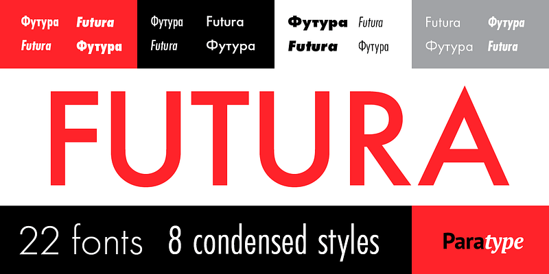

THE SYSTEM OF WEIGHTS
La declinazione geometrica della famiglia attraverso pesi e stili.

Concept & Design Brief
- Anno di rilascio: 1927 (Bauer Type Foundry, Francoforte).
- Intento Progettuale: Rappresentare lo spirito degli anni '20. Paul Renner voleva un font che rompesse definitivamente con il passato calligrafico, progettando uno strumento visivo puro, funzionale e adatto alla moderna riproduzione industriale.
- Caratteristiche Distintive: Struttura costruita rigorosamente sulle forme primarie (cerchio, quadrato, triangolo). Ascendenti e discendenti insolitamente lunghe e vertici affilati (A, M, N, V).
Set di Caratteri
Le proporzioni matematiche si estendono all'intero set di glifi. Caratteristica la purezza circolare dello zero e le linee diagonali affilate del quattro.
Uppercase
A B C D E F G H I J K L M N O P Q R S T U V W X Y Z
Lowercase
a b c d e f g h i j k l m n o p q r s t u v w x y z
Numerals & Punctuation
0 1 2 3 4 5 6 7 8 9 & @ # % * ! ?
Schema dei Pesi
| Stile / Peso | Caratteristiche Visive | Destinazione d'uso |
|---|---|---|
| Futura Light | Aste estremamente sottili, linee geometriche affilate. | Editoria di lusso, titoli ad alta eleganza. |
| Futura Book | Il peso standard originale, massimo bilanciamento. | Testi |